A scattering beam of light brings glory in the dark. A little positive effort can take you so far, towards the glory of our beautiful cosmos.
A Review of Light
Light is our primary means of perceiving the world around us. Indeed, in a scientific context, the detection of light is a very powerful tool for probing the universe around us. Light is electromagnetic radiation that shows the properties of both waves and particles. Electromagnetic radiation, as the name suggests, describes fluctuations of electric and magnetic fields, transporting energy at the Speed of Light (which is \(3\times10^8\ \text{m/s}\)). Light is a form of energy that can be detected by the human eye. Light exists in tiny energy packets called photons.
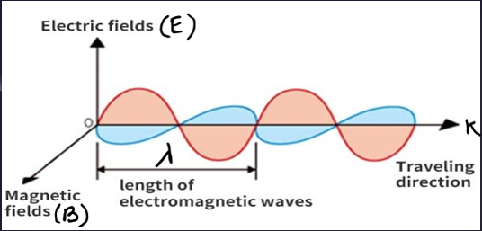
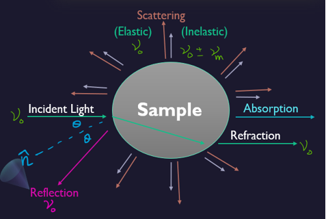
As light interacts with matter, it can be become altered, and by studying light that has originated or interacted with matter, many of the properties of light can be determined. Like Absorption, Reflection, Refraction, and Scattering. Scattering has been further classified into two parts. Elastic (known as Rayleigh Scattering) and In-elastic (known as Raman Scattering).
What is Spectroscopy
The study of how ‘species’ (i.e., atoms, molecules, solutions) react to light. Some studies depend on how much light an atom absorbs. The electromagnetic radiation absorbed, emitted, or scattered by the molecule is analyzed. Typically, a beam of radiation from a source such as a laser is passed through a sample, and the radiation exiting the sample is measured. Some, like Raman, depend on a molecule’s vibrations in reaction to the light. This figure shows the Electromagnetic Spectrum, highlighting the narrow window of Visible Light that is detectable by the human eye.
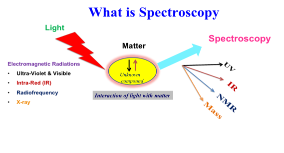
Light Scattering Phenomenon
Light can be examined entirely from its source. When light passes from one medium to any other medium say air, or a glass of water then a part of the light is absorbed by particles of the medium preceded by its subsequent radiation in a particular direction. This phenomenon is termed scattering of light. The intensity of scattered light depends on the size of the particles and the wavelength of the light.
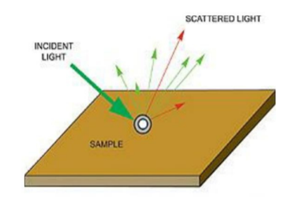
Raman Spectroscopy
In 1928, the Indian physicist Chandrasekhara Venkata Raman discovered that the visible wavelength of a small fraction of the radiation scattered by certain molecules differs from that of the incident beam.
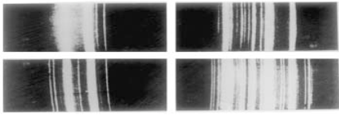
Furthermore, he noted that the change (shifts) in frequency depend upon the chemical structure of the molecules responsible for the scattering First photographed Raman spectra.
What is Raman Scattering
When a monochromatic radiation of frequency \(\nu\) is passed through a non-absorbing medium, it is found that most of it is transmitted without any change, and some of it is scattered. If the scattered energy is analyzed utilizing a spectrometer, the bulk of the energy is found at the frequency of the incident beam 𝜈 but a small portion of the scattered energy will be found at frequencies \(\nu=\nu_{0}\pm \nu_m\). The scattering of radiation with a change of frequency is called Raman scattering.
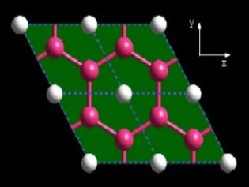
Why Raman Scattering?
In Raman spectroscopy, by varying the frequency of the radiation, a spectrum can be produced, showing the intensity of the exiting radiation for each frequency. This spectrum will show which frequencies of radiation have been absorbed by the molecule to raise it to higher vibrational energy states.
Rayleigh Scattering and Raman Scattering
Scattering of electromagnetic radiation is in two common types Rayleigh and Raman scattering. Even though there are some differences between them, the key difference between Rayleigh and Raman scattering is that Rayleigh scattering is a form of elastic scattering of light or any other electromagnetic radiation whereas Raman scattering is a form of inelastic scattering of light or any other electromagnetic radiation.
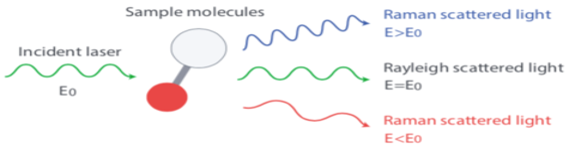
The frequency of the scattered light can be:
At the original frequency \((\nu_0)\)“Rayleigh scattering”.
At some shifted frequency \((\nu_{s}=\nu_0 \pm \nu_{\text{molecule}})\) “Raman scattering or Raman Effect.
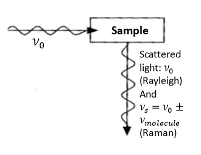
Principal of Raman Spectroscopy
Raman spectroscopy is based on Raman scattering (or Raman effect) that reveals the vibrational, rotational, and other low-frequency modes of molecules. In this technique, the sample is exposed to an intense beam of monochromatic light (typically a laser beam) in the frequency range of the visible, near-infrared, or near-ultraviolet region. Electromagnetic radiation, interacting with a substance, can be transmitted, absorbed, or scattered. When the monochromatic radiation is scattered by molecules, the majority of the radiation undergoes the common Rayleigh scattering (radiation’s frequency/wavelength is unchanged). However, a small fraction of the scattered radiation is observed to have a slightly different frequency from that of the incident radiation. This is known as the Raman effect. The Raman lines show up pairwise. The dominant Stokes lines have a lower frequency (longer wavelength) than the initial radiation, whereas the weaker (often non-detectable) anti-stokes lines have a higher frequency (shorter wavelength). The frequency shifts are virtually independent of the excitation wavelength and are characteristic of the particular substance/molecule. Usually, one only records the relatively strong Stokes lines, which therefore are attributed to a positive frequency shift. Such spectral coordinate is called the Raman shift and is measured in wave numbers (in cm-1). See the scheme in the figure below.
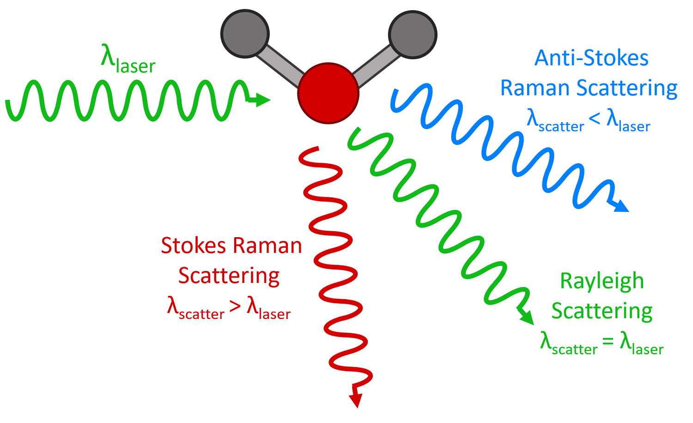
Note: Raman shift can correspond either to rotational, vibrational, or electronic frequencies.
Remark
Radiation scattering to the lower frequency side (to the red side) of the Rayleigh line is called Stokes scattering.
Radiation scattering to the higher frequency side (to the blue side) of the Rayleigh line is called anti-Stokes scattering.
As with other spectroscopic techniques, Raman spectroscopy detects certain interactions of light with matter. In particular, this technique exploits the existence of Stokes and Anti-Stokes scattering to examine molecular structure. When radiation in the near-infrared (NIR) or visible range interacts with a molecule, several types of scattering can occur. Three of these can be seen in the energy diagram in the figure below.
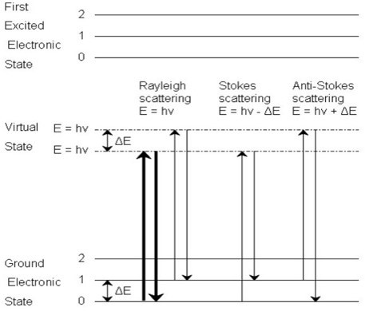
Three types of scattering by a molecule excited by a photon with energy, \(E = hν\). The most common transition is marked with bold arrows.
In all three types of scattering, an incident photon of energy hν raises the molecule from a vibrational state to one of the infinite numbers of virtual states located between the ground and first electronic states. The type of scattering observed is dependent on how the molecule relaxes after excitation.
Rayleigh scattering is by far the most common transition since no change has to occur in the vibrational state of the molecule. The anti-Stokes transition is the least common, as it requires the molecule to be vibrationally excited before the photon is incident upon it. Due to the lack of intensity of the anti-Stokes signal and filtering requirements that eliminate photons with incident energy and higher, generally, only Stokes scattering is used in Raman measurements. The relative intensities of Rayleigh, Stokes, and anti-Stokes scattering can be seen in the figure below.
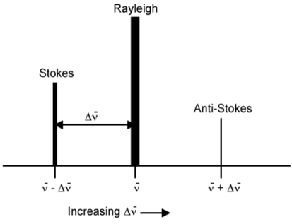
We can see the Location and relative intensity (indicated by peak height and width) of the Stokes and anti-Stokes scattering relative to Rayleigh scattering.
Dipole Moment In a Molecule
Raman scattering can be explained using molecular polarizability. If a molecule is placed in an electric field, electrons and nuclei get displaced. Due to the separation of charged species, an electric dipole moment is induced in the molecule, and it is said to be polarized. If \(E\) is the strength of the electric field and \(p\) is the magnitude of the induced dipole moment, then
\[ \boxed{𝑝 = 𝛼𝐸} \hspace{1 cm} ...(1) \]
where \(𝛼\) is the polarizability of the molecule. If a sample is subjected to an electromagnetic wave of frequency \(ν_0\), the electric field experienced by each molecule of the sample varies as
\[\boxed{𝐸 = 𝐸_0\cos(2𝜋\nu_0𝑡)} \hspace{1 cm} ...(2) \]where \(E_0\) is the amplitude of the electromagnetic wave. Thus, we can rewrite the eq. \((1)\) as,
\[\boxed{𝑝 = 𝛼𝐸_0\cos(2𝜋\nu_0𝑡)} \hspace {1 cm} ...(3)\]
and this implies that the interaction of electromagnetic radiation of frequency \(ν_0\) induces a molecular dipole moment that oscillates and emits radiation of the same frequency, and this is the classical explanation of Rayleigh scattering.
However, the ability to perturb the local electron cloud of a molecular structure depend on the relative location of the individual atoms; hence, the polarizability is a function of the instantaneous position of the constituent atoms. So, the polarizability changes with small displacement from the equilibrium position (i.e., molecular vibration) and is given by,
\[\boxed{ \alpha = \alpha_0\ +\ \bigg(\dfrac{\partial \alpha}{\partial r}\bigg) \Delta r} \hspace{1 cm} ...(3) \]
where \(𝛼\) is equilibrium polarizability and if a molecule executes simple harmonic motion, the displacement can be represented as,
\[\boxed{\Delta r=r_{\text{max}}\ \cos(2\pi\nu t)} \hspace{1 cm}...(4)\]
where \(r_{max}\) is the maximum separation distance between atoms relative to their equilibrium position.
Therefore we can write, \(\alpha = \alpha_0\ +\ \bigg(\dfrac{\partial \alpha}{\partial r}\bigg) r_{\text{max}}\ \cos(2\pi\nu t)\)
Substituting all these, we will get the equation of \(p\),
\[ p=\left[\alpha_0\ +\ \left(\dfrac{\partial \alpha}{\partial r}\right) r_{\text{max}}\ cos(2\pi\nu t) \right]E_0 \cos(2\pi\nu_0 t) \]
\[= 𝛼_0𝐸_0\cos(2𝜋\nu_0𝑡) + \dfrac{E_0\ r_{\text{max}}}{2} \left( \dfrac{\partial\alpha}{\partial r}\right) 2\cos(2\pi\nu t)\ \cos(2\pi\nu_0t)\]
\[=\alpha_0+ E_0 \ \cos(2\pi\nu t)+ \dfrac{E_0r_{\text{max}}}{2}\bigg(\dfrac{\partial \alpha}{\partial r}\bigg) \bigg[\cos\{2\pi t(\nu_0\ +\nu)\}\ +\ \cos\{2\pi t(\nu\ -\nu_0)\} \bigg]\]
Therefore,
\[\boxed{p =\alpha_0+ E_0 \ \cos(2\pi\nu t)+ \dfrac{E_0r_{max}}{2}\bigg(\dfrac{\partial \alpha}{\partial r}\bigg) \bigg[\cos\{2\pi t(\nu_0\ +\nu)\}\ +\ \cos\{2\pi t(\nu\ -\nu_0)\} \bigg]}\]
Where \(\nu_0\), \(\nu_0\) : Excitation and vibrational frequency respectively.
The first term in this equation represents Rayleigh scattering and occurs at the excitation frequency \(\nu\). The second and third terms correspond to Stokes \((𝜈 - \Delta\nu)\) and anti-Stokes \((𝜈 +\Delta \nu)\) scattering. In both inelastic scatterings, the excitation frequency is modulated by the vibrational frequency of the bond.
Besides, from this eq., the molecules that have Raman active vibration modes must experience a change in polarizability during a vibration, i.e., the electron density in the molecule must distort from its typical shape (inducing a dipole). Molecules with symmetrical bends and stretches, therefore, are generally better Raman scatterers. So, for a molecule to be Raman active, its molecular rotation or vibration must cause a change in a component of molecular polarizability.
Comparison of Raman and IR Spectroscopy
In context A vibrational spectroscopy
IR and Raman are the most common vibrational spectroscopies for assessing molecular motion and fingerprinting species.
Raman is based on the inelastic scattering of a monochromatic excitation source.
Raman spectroscopy sounds very much like infrared (IR) spectroscopy; however, IR examines the wavenumber at which a functional group has a vibrational mode, while Raman observes the shift in vibration from an incident source. The Raman frequency shift is identical to the IR peak frequency for a given molecule or functional group. As mentioned above, this shift is independent of the excitation wavelength, giving versatility to the design and applicability of Raman instruments.
The cause of the vibration is also mechanistically different between IR and Raman. This is because the two operate on different sets of selection rules. IR absorption requires a dipole moment or change in charge distribution to be associated with the vibrational mode. Only then can photons of the same energy as the vibrational state of the molecule interact. A schematic of this can be seen in the figure below.
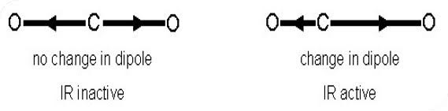
A change in dipole moment is required for a vibrational mode to be IR active, only then can photons of the same energy as the vibrational state interact.
A change in the polarizability of a bond is required for a vibrational mode to be Raman active. Raman signals, on the other hand, due to scattering, occur because of a molecule’s polarizability, illustrated in Figure.
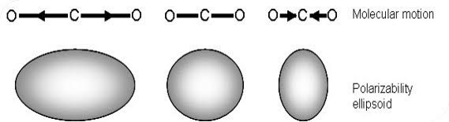
Many molecules that are inactive or weak in the IR will have intense Raman signals. This results in often complementary techniques.
What does Raman Spectroscopy Measure
Raman activity depends on the polarizability of a bond and how easily electrons can be displaced from the bond, or conversely how tightly they are held to the nuclei. Distortion of electrons is easier as the bond becomes longer and harder when it shortens thus polarizability changes with vibration– and this vibrational mode scatters Raman light.
In an asymmetric stretch, the electrons are more easily polarized in the bond that expands & less easily in the bond that compresses, thus there is no overall change in the polarizability of the bond in it is Raman inactive.
Types of Raman Spectroscopy
There are 4 different types of Raman Spectroscopy. They are:
Micro-Raman spectrometer (or Raman microscope).
Surface-enhanced Raman spectroscopy (SERS).
Resonance Raman spectroscopy (RRS).
Portable Raman spectrometer.
Surface-enhanced Raman Spectroscopy (SERS)
Now the time is to introduce Surface-enhanced Raman spectroscopy (SERS). One of the limitations of the Raman effect is that it is a very weak phenomenon. About one in 107 photons undergo Raman scattering. Therefore, the Raman signal is very low from low concentrations of the analyte or poor Raman scatterers. Sometimes the high fluorescence from the molecule obscures the Raman signals. Surface-enhanced Raman spectroscopy (SERS) is all about amplifying Raman signals from molecules, by several orders of magnitude. SERS is a technique where molecules undergo much higher scattering efficiencies when adsorbed on metal colloidal nanoparticles or rough metal surfaces.
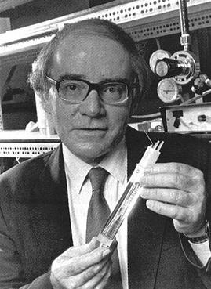
The group discovered an anomalously large enhancement of the Raman signal of pyridine in the presence of a roughened silver electrode. In the definition of SERS, we can say, SERS is a phenomenon associated with the enhancement of the electromagnetic field surrounding small objects optically excited near an intense and sharp plasmon resonance. The enhanced fields excite the adsorbate (probe) and the scattered radiation will again be enhanced. Surface-enhanced Raman scattering (SERS) consists in using the large local field enhancements that can exist at metallic surfaces (under the right conditions, typically by profiting from localized surface plasmon resonances) to boost the Raman scattering signal of molecules at (or close to) the surface.
Using SERS increases in the intensity of Raman signal have been regularly observed on the order of 104-106, and can be as high as 108 and 1014 for some systems. SERS works best with coinage (Au, Ag, Cu) or alkali (Li, Na, K) metal surfaces. The importance of SERS is that the surface selectivity and sensitivity extend RS applications to a wide variety of interfacial systems previously inaccessible to RS because RS is not surface sensitive.The enhancement was initially attributed to greater than expected, or fractal-like, surface area, but subsequent reports showed that the anomalous intensity could not be accounted for by increased surface area and were, in fact, a new phenomenon, giving rise to the idea of the SERS cross-section. However, while SERS has become a large and extremely active field of study, there is still a debate on the exact details of its mechanism and its magnitude.
Please let us know if you are interested to know more about each type of Raman Spectroscopy.
References
Colin N. Banwell, Elaine M.McCash, 1994.Fundamentals of Spectroscopy, Tata McGraw-HillPublishing Company Limited, New Delhi, 308p.
Ferraro, J.R.; Nakamoto, K.; Brown, C.W.; Introductory Raman Spectroscopy, ISBN: 978-8-12-254105-6
Aroca, Ricardo, Surface Enhanced Vibrational Spectroscopy, ISBN: 978-0-47-160731-1
Anna K Tudos, and Richard B M Shasfoot, Handbook of Surface Plasmon Resonance, First Edition, RSC Publishing, 2008.
Peter Atkins, and Ronald Friedtman, Molecular Quantum Mechanics, Fourth Edition, Oxford University Press, 2005.
https://www.intechopen.com/chapters/72277
M. Moskovits, , Reviews of Modern Physics, 57 3 (1985)